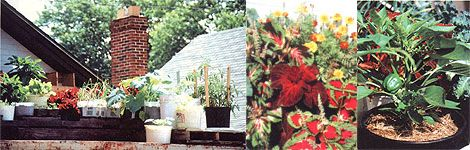

A Rooftop Oasis
March/April 1986
"On the roof it's peaceful as can be/And there the world below can't bother me. "
(From "Up On The Roof," by Gerry Goffin and Carole King, © 19
by Bob Kleszics
Spring had arrived - robins, crocuses, mud, the whole bit. But while other gardeners were planting (and joyfully anticipating future harvests), I was lamenting the sad fate that had befallen me: Because I'd recently moved from my suburban home to a city apartment, I had become a gardener without a garden.
By the middle of April, though, I'd found a salve for my sorrow . . . and, surprisingly enough, I found it on the roof of the food coop where I work. A 7' X 18' section over an addition to the building sloped slightly to the west, with an unobstructed southern exposure in the afternoon. "Aha," said I to my frustrated gardener self. "All I have to do is offset the slope somehow . . . fill a few of these plastic, five-gallon peanut butter tubs with dirt . . . and presto, instant garden!"
Well, as things turned out, there was just a tad more to it than that.
After making sure the roof was sound enough to hold the extra weight - about half a ton for what I had in mind - I leveled the surface by building up the sloping portion with four wooden pallets and some scrap lumber. Then I scrounged together a random collection of no-cost planting containers: The aforementioned peanut butter tubs, some three-gallon Japanese miso kegs, a wooden cantaloupe crate, and a variety of other recycled receptacles.
I knew that water retention is important for container-grown plants - especially when they're exposed to as much heat as the crops in my hot-tin-roof garden would face - so I was careful to use only plastic (or plastic-lined wooden) containers. (Clay or fiber pots would have dried out too quickly.) Also, for the same reason, I drilled only two or three drain holes in each receptacle. And I decided to use pure compost as the growing medium, because humus holds moisture much better than run-of-the-mill dirt or commercial potting soil.
Fortunately, the small city where I live composts its leaves and grass clippings, and lets anyone mine the resulting black gold, gratis. So I loaded the back of my station wagon with drain-hole-drilled containers, filled them at the municipal compost pile, traveled back to the co-op, lugged the heavy pots up two sets of stairs and out a second-story window, and positioned them in my garden-to-be - and then repeated the whole laborious process several times, shuttling back and forth (and down and up) until some twenty-odd casks of compost were in place.
It was difcult at the time to appreciate what all that soil and sweat would eventually yield. But at the end of the day, when I put in my first planting - three dozen onion sets in a plastic foam grape box - I already felt that simply having a garden was worth all of the work.
PLANTING
Almost any kind of vegetable will grow in a pot . . . but that doesn't mean it will thrive , or that it will produce bounteously. So when it came to deciding what to grow in my by-the-gallon garden, I took two factors into primary consideration: the space required - both above and below the soil - and the expected yield. I immediately ruled out pumpkins and similar sprawling vine crops, as well as root crops (such as daikon radishes) and other veggies that have extensive or deep root systems. And I also vetoed spare-hungry, low-yield crops such as corn. (I knew that a five-gallon bucket of corn wouldn't produce much of a harvest!) The value of the yield was a consideration, too. I can buy a 50-pound sack of potatoes for less than $3.00, so I figured it would be silly for me to grow spuds.
Just what did I plant, then, besides scallions? Well, my spring crops were red leaf lcttuce, Swiss chard, chives, radishes, kale, and collards. My summer plantings (which I was able to put in two weeks earlier than usual, thanks to the heat-holding roof) included cherry tomatoes, pickling cukes, green peppers, yellow squash, bush beans, and parsley. I also added marigolds, coleus, sweet woodruff, and oregano . . . simply because no garden is complete without the color of flowers and the fragrance of herbs.
I planted my seeds in a conventional manner, using traditional depth and spacing guidelines. The onions sets in the grape box, for instance, were planted on two-inch centers - common spacing for intensive scallion production. Lettuce, which also did well in grape boxes, was seeded directly in three rows about four inches apart and then heavily thinned throughout the season. The larger plants - tomatoes, peppers, collards, etc. - were purchased as seedlings; each got its own five-gallon tub from the first.
The melon crate that I lined with Mylar (to hold in both moisture and dirt) became a garden unto itself. It was by far the largest container I had (about 30 gallons), so I sowed three crops in it. In the back half, a row of pickling cukes, interplanted with some dill, climbed a space-saving trellis. And in the front was a double row of green beans. Although the box eventually looked pretty crowded, all of the plants stayed healthy throughout the summer.
In general, though, a rule of thumb for the container gardener is oversow and then thin ruthlessly . I learned that lesson when my unthinned chard never got more than nine inches tall - puny in comparison to the lush fronds I'd grown in my raised-bed past.
Another danger to vegetable vitality - particularly for squashes and their cousins - is transplant shock. I sowed six yellow squash seeds in each of two five-gallon buckets and then, about a month later, carefully (or so I thought) transplanted all but one plant from each bucket into other containers. The two undisturbed plants remained hardy and produced well, but their transplanted siblings were stunted and never bore fruit. Except for tomatoes, peppers, and other tropically inclined cultivars that appreciate a start indoors, rooftop garden crops can (and, I found, should ) be started in the same containers in which they'll mature.
MAINTENANCE
The most important word in the container gardener's maintenance vocabulary is water - or more precisely, watering , which is what I ended up doing almost daily throughout June, July, and August. The high heat and low humidity of the rooftop environment caused my green charges to be much thirstier than their earth-bound counterparts would be. When you add those two factors to the others that were at work - low moisture retention (in even the best tubs), shallow root sys tems, and a Sahara-dry summer - it's no wonder I lugged at least ten gallons of water up to my rooftop garden every day the sun shone. (Looking back, ten gallons a day doesn't seem to be all that much . . . but an outside faucet and a hose sure would've helped.)
Container gardens also have special fertilization needs, mostly because the soil isn't a part of a natural nutrient-building environment the way the soil in a "real" garden is. My vegetables and flowers gradually used up the nutrients in their pure compost . . . and I'm sure the daily waterings washed some nutrients out through the pots' drain holes, too. So, around the end of June, I started adding weekly doses of fish emulsion and liquid kelp to the water. Potent commercial fertilizers might have produced greener, lusher growth, but I couldn't imagine having a nonorganic garden - even one growing in petrochemical-based plastic buckets!
A FEW PROBLEMS
Being organically in clined, I also de clined to grab a bottle of bootleg DDT at the first sight of cabbageworms chomping their way through my collards. Instead, I sent many of the little rascals splatting to their ignoble ends on the parking lot below. But since there were a lot of them and only one of me, and because they are good at hiding, I finally resorted to a few applications of Bacillus thuringiensis , a microorganism that gives caterpillars a terminal case of upset stomach. The only other noxious insects that came calling were aphids (on a stunted kale plant; aphids always know which garden crop is the weakest) and a few Mexican bean beetles - but neither pest became much of a problem.
My pail-grown produce also escaped the ravages of disease, even though the plants occasionally suffered from moisture stress (whenever I was away for a few days and unable to water). Moisture-stressed plants are usually more susceptible to disease (and insect) attack, but mine came through admirably. Weeds weren't a problem either; only a few emerged from the leaf-and-grass-clipping compost.
One minor problem that did need attention developed after some plants became rootbound and the dirt shrank away from the sides of the tubs. I had to tamp new soil down into the gaps; otherwise, at watering time the liquid would have washed right over the edge of the compacted compost, down the sides, and out the drain holes.
LOOKING BACK
Some gardeners - like some fishermen and hunters - find more pleasure in the process than in the harvest. Doing becomes its own reward.
So it was with me and my rooftop flower-and-vegetable patch. The yields were less than spectacular. Sure, I had more lettuce than I knew what to do with. The peppers were prolific. There were lots of scallions in the spring and more than enough cherry tomatoes throughout the summer. And I usually had a meal's worth of collards and kale every week. But I still had to buy most of my fresh veggies downstairs - from the co-op's produce case.
Nevertheless, my pot-bound plantation was fun. And it was a learning experience that I can draw upon again, if I ever have to (fortunately, I've since moved to a place in the country where there's lots of ground-level growing space). But most important, my container garden gave me a place to relax and restore my spirit. Lounging among the plants on that roof, watching the bees move from flower to flower, I felt as though the city streets were miles - instead of just two stories - away.
|
 LEFT: Wooden pallets leveled a sloping portion of the roof. The author used everything from peanut butter tubs to Japanese miso kegs for plant containers. MIDDLE: No garden is complete without flowers! RIGHT: Pot grown peppers did especially well. |
 A rooftop garden not only provides fresh vegetables and flowers, but also serves as a relaxing retreat from city pressures. |
|